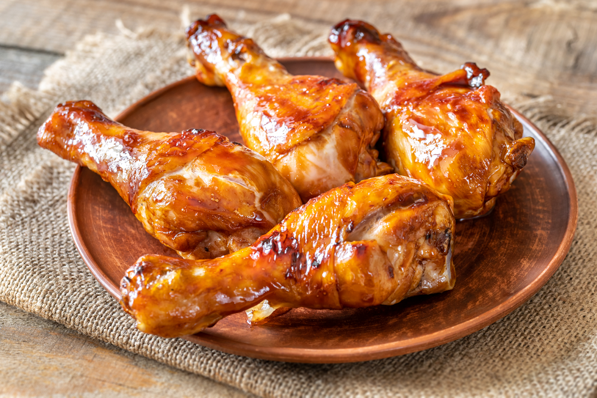

Вот и рецепты!
Думаю ты найдешь нужный тебе рецепт!
Жареная Курица

Ингредиенты:
- Куриные бедра - 1 кг.
- Соль - по вкусу.
- Перец черный - по вкусу.
- Чеснок - 3 зубчика.
- Оливковое масло - 100 мл.
- Специи (паприка, тимьян) - по вкусу.
Приготовление:
1. Замариновать курицу с солью и специями.
2. Разогреть сковороду и добавить масло.
3. Обжарить курицу до золотистой корочки.
Куриный Салат
Ингредиенты:
- Куриное филе - 300 г.
- Листья салата - 1 пучок.
- Помидоры - 2 шт.
- Огурец - 1 шт.
- Оливковое масло - 3 ст. ложки.
- Соль, перец - по вкусу.
Приготовление:
1. Отварить куриное филе до готовности.
2. Порезать филе, помидоры и огурец.
3. Смешать все ингредиенты с маслом.
Рамен с курицой
Ингредиенты:
- Куриное филе - 300 г.
- Рамен (лапша) - 200 г.
- Бульон куриный - 1 л.
- Зеленый лук - 2 пера.
- Соевый соус - 3 ст. ложки.
- Яйцо - 2 шт.
Приготовление:
1. Отварить куриное филе в бульоне.
2. Добавить лапшу и варить 5 минут.
3. Подать с яйцом и зеленым луком.
Курица в масленом соусе
Ингредиенты:
- Куриное филе - 400 г.
- Сливочное масло - 100 г.
- Чеснок - 4 зубчика.
- Лимон - 1 шт.
- Соль, перец - по вкусу.
- Петрушка - для подачи.
Приготовление:
1. Обжарить куриное филе на масле.
2. Добавить чеснок и сок лимона.
3. Готовить до золотистой корочки.